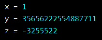

There are three numeric types in Python:
Int
Int, or integer, is a whole number, positive or negative, without decimals, of unlimited length.

Float
Float, or "floating point number" is a number, positive or negative, containing one or more decimals.

Float can also be scientific numbers with an "e" to indicate the power of 10.

Complex
Complex numbers are written with a "j" as the imaginary part.

Random Number
Python does not have a random() function to make a random number, but Python has a built-in module called random that can be used to make random numbers.